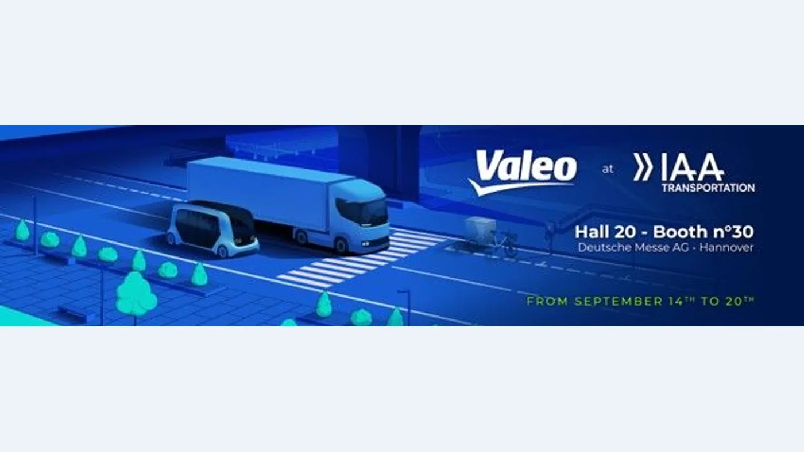

Valeo anunció el 1 de septiembre las tecnologías que exhibirá en IAA Transportation 2026, la feria de transporte que se realizará del 14 al 20 de septiembre en Hannover, Alemania. La propuesta combina electrificación, sistemas avanzados de asistencia al conductor, software y soluciones para reparto urbano.
El anuncio no corresponde a un único camión ni confirma lanzamientos comerciales en Argentina. Es una muestra de componentes y arquitecturas destinadas a fabricantes globales. Aun así, permite anticipar qué piezas, procedimientos de diagnóstico y conocimientos comenzarán a ganar importancia en los vehículos pesados.
El desafío térmico del camión eléctrico
Un vehículo pesado eléctrico debe refrigerar batería, electrónica de potencia, motor y cabina en condiciones muy diferentes. La temperatura influye en autonomía, velocidad de carga, desempeño y vida útil. Por eso, la gestión térmica deja de ser un sistema auxiliar y pasa a integrar la estrategia energética del vehículo.
Valeo mostrará el compresor eléctrico EDC-120 con inversor integrado para camiones y buses eléctricos. La integración puede reducir conexiones y simplificar el conjunto, aunque la reparación exige herramientas de alta tensión, control de aislamiento y procedimientos específicos. La compañía también presenta bombas de calor inteligentes y calentadores de refrigerante de alta tensión.
Más electrónica de potencia
La oferta incluye inversores, cargadores a bordo y soluciones de propulsión eléctrica. El inversor transforma la energía de la batería para controlar el motor; el cargador gestiona la entrada de corriente; y el sistema térmico mantiene los componentes dentro de su rango. Una falla en cualquiera de ellos puede limitar potencia o impedir la carga.
Para una flota, esto cambia el mantenimiento preventivo. Además de revisar frenos, suspensión y neumáticos, será necesario vigilar circuitos de refrigeración, conectores, sellos, software y registros de temperatura. La suciedad o una pequeña pérdida pueden provocar una reducción de desempeño antes de generar una avería visible.

ADAS para camiones y condiciones difíciles
La compañía destaca una demanda creciente de sistemas de asistencia. Su catálogo abarca desde conjuntos de sensores básicos hasta soluciones preparadas para automatización de nivel 4. Ese nivel implica que el vehículo puede realizar la conducción dentro de condiciones operativas definidas, pero no significa autonomía universal en cualquier ruta.
Los pesados necesitan una adaptación particular. La masa, la longitud y el radio de giro cambian las distancias de seguridad. También hay vibraciones, barro, lluvia, hielo e insectos que afectan cámaras y lidar. Valeo incluye sistemas de limpieza para mantener la superficie de los sensores en condiciones de lectura.
Por qué limpiar un sensor es una cuestión de seguridad
Una cámara parcialmente tapada no siempre deja de funcionar por completo: puede entregar una imagen degradada. El software debe detectar esa pérdida y avisar al conductor. En paralelo, el sistema de limpieza necesita depósito, bomba, mangueras, boquillas y control eléctrico. Es un nuevo circuito de mantenimiento que se suma a los tradicionales.
Para el taller será importante comprobar calibración y orientación después de cambiar parabrisas, paragolpes o soportes. Un sensor correctamente conectado pero desplazado puede interpretar mal una distancia. Las especificaciones de montaje y el diagnóstico posterior pasan a ser parte inseparable de la reparación.
El vehículo definido por software
Valeo también trabaja en arquitecturas de vehículo definido por software. En ellas, algunas funciones se actualizan o configuran mediante programas sobre una plataforma electrónica centralizada. El beneficio posible es incorporar mejoras sin reemplazar todos los módulos; el desafío es controlar versiones, compatibilidad y ciberseguridad.
La identificación del repuesto deberá incluir hardware y software. Dos módulos físicamente iguales pueden requerir programación diferente. Antes de sustituir una unidad será necesario registrar número de pieza, versión, configuración del vehículo y procedimientos de aprendizaje.
Del largo recorrido a la última milla
La estrategia incorpora Cyclee, una solución eléctrica para movilidad de carga urbana. La idea es conectar la logística de larga distancia con vehículos livianos para el tramo final. No reemplaza al camión pesado: organiza un ecosistema donde cada medio trabaja en la zona para la que resulta más eficiente.
Para las empresas, la transición exige observar la operación completa. Energía disponible, tiempos de carga, temperatura ambiente, peso transportado y recorrido diario determinan si una tecnología es viable. Una ficha técnica aislada no reemplaza un análisis de ruta.
Qué debería preparar un taller
- Seguridad eléctrica: formación, elementos de protección y verificación de ausencia de tensión.
- Diagnóstico: herramientas compatibles y acceso a información técnica actualizada.
- Calibración: espacios y patrones para cámaras, radar y otros sensores.
- Gestión térmica: control de refrigerantes, bombas, válvulas y estanqueidad.
- Trazabilidad: registro de versiones de software y codificaciones realizadas.
- Limpieza técnica: evitar contaminación en conectores y circuitos sensibles.
Qué significa para Argentina
La exhibición es internacional y no anuncia fechas locales. La adopción dependerá de fabricantes, homologaciones, infraestructura y demanda. Sin embargo, componentes similares ya se expanden en buses, utilitarios y camiones, por lo que la capacitación puede comenzar antes de que el volumen sea alto.
Para transportistas argentinos, la señal es clara: el costo total incluirá energía, software, calibraciones y disponibilidad de técnicos, además del repuesto físico. La mejor tecnología será la que pueda mantenerse con respaldo durante años y dentro de la realidad de cada ruta.